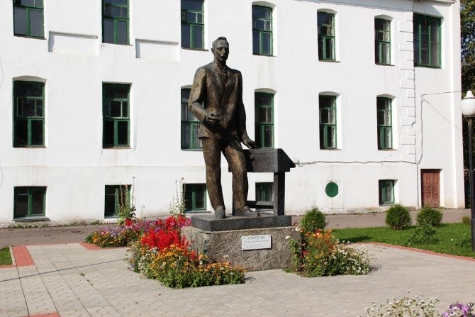
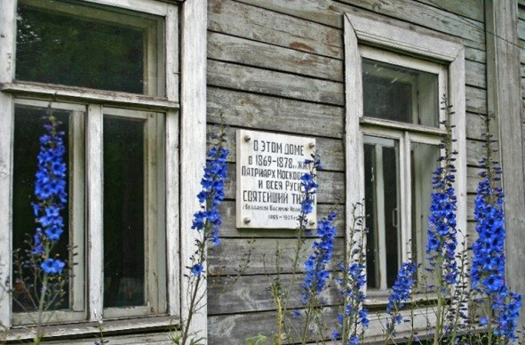
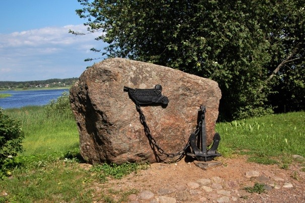
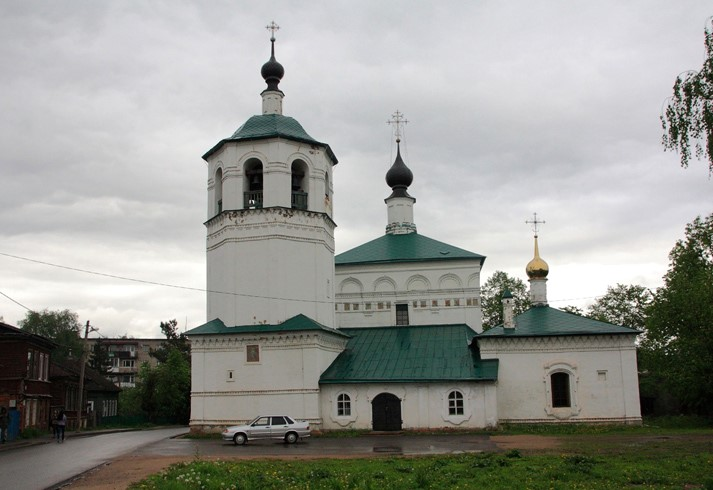
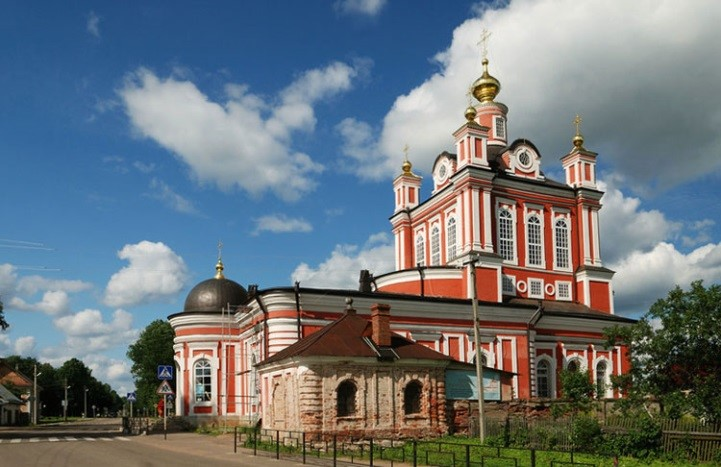

Торопец
Культура
Памятник Учителю

Первый памятник Учителю установлен в Торопце во время торжеств, проходивших в 1974 году в честь 900-летия со дня основания этого старинного русского города. Инициатива создания монумента принадлежит выпускникам торопецкой школы № 1. Скромные человеческие слова — «Народному учителю от благодарных учеников» — написали они на постаменте, но в этих словах вся глубина их любви к наставнику. Перед учителем — торопецкая школа, где изучала азбуку добрая половина всех жителей города, позади — интернат для учеников из ближайших и дальних сел. Авторы памятника, московские скульпторы В. Думанян и Ю. Орехов установили бронзовую в 3,5 метра фигуру учителя между двумя зданиями таким образом, что она стала композиционным стержнем центральной улицы и связала строения, имеющие отношение к школе, в единый строгий архитектурный ансамбль. Каждый год 1 сентября и в День Учителя юные торопчане возлагают к памятнику цветы.
Музей Патриарха Никона

Мемориальная доска, на которой написано, что в 1869 -1878 году здесь проживал Василий Иванович Белавин, он же будущий патриарх Никон. Патриарх Никон был расстрелян за антисоветскую деятельность в 1925году. В 2008 году часть дома была выкуплена, и местный протоиерей основал здесь дом – музей, он же проводит экскурсии, рассказывая о жизни и деятельности Патриарха.
Памятник адмиралу П. И. Рикорду

Будущий адмирал Павел Иванович Рикорд был рожден в Торопце. Именно благодаря этому адмиралу Россия смогла избежать трех войн. Знаменит также кругосветным путешествием, которое совершил на шлюпке «Диана». Ему установлен памятник в Японии. В Торопце памятник установлен в 2001 году.
Спасо – Преображенская церковь

Всего за 7 месяцев была возведена эта церковь. Время постройки — середина 12 века. В этом храме есть уникальная фресковая роспись.
Собор Корсунской иконы Божьей матери

Этот собор, построенный в стиле барокко, стоит на берегу озера. Возведен в начале 19века. Главная святыня – Корсунская икона Божьей матери, написана евангелистом Лукой. В Торопец эта икона былА привезена еще в 1239 году. Храм, где она хранилась ранее, сгорел в конце 18 века и на его месте был отстроен новый собор.